Lecturer slides
All 342 slides of the lecturer (9 decks) with the module that uses each. Click an image for the large version.
Number system (27) · VI/EN transcript (27/27)
 num·1 · m01
num·1 · m01 num·2 · m01
num·2 · m01 num·3 · m01
num·3 · m01 num·4 · m01
num·4 · m01 num·5 · m01
num·5 · m01 num·6 · m01
num·6 · m01 num·7 · m01
num·7 · m01 num·8 · m01
num·8 · m01 num·9 · m01
num·9 · m01 num·10 · m01
num·10 · m01 num·11 · m01
num·11 · m01 num·12 · m01
num·12 · m01 num·13 · m01
num·13 · m01 num·14 · m01
num·14 · m01 num·15 · m01
num·15 · m01 num·16 · m01
num·16 · m01 num·17 · m01
num·17 · m01 num·18 · m01
num·18 · m01 num·19 · m01
num·19 · m01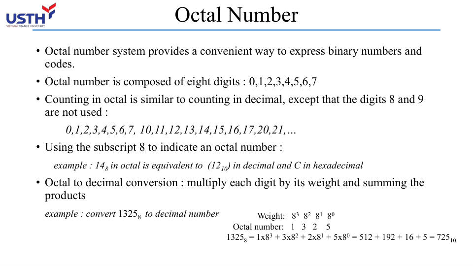
num·20 · m01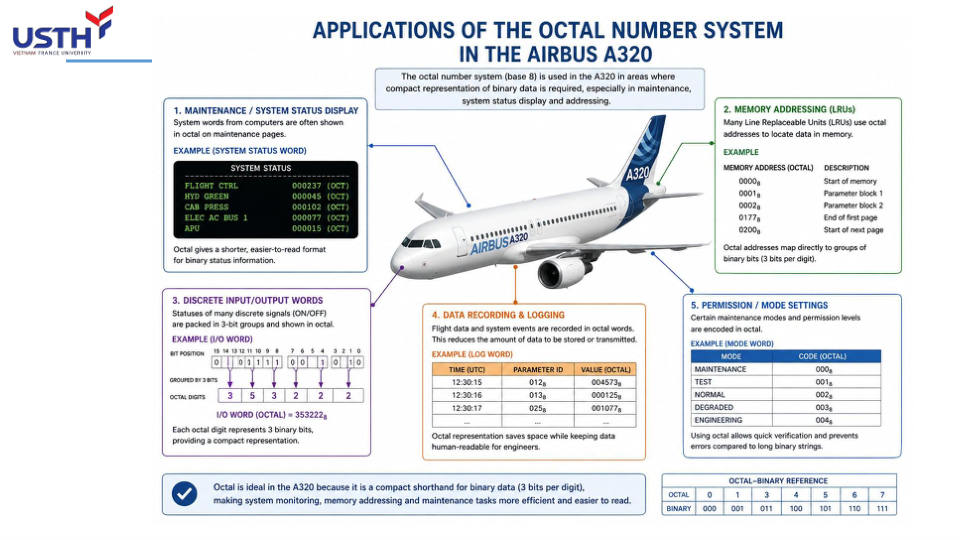
num·21 · m01 num·22 · m01
num·22 · m01 num·23 · m01
num·23 · m01 num·24 · m01
num·24 · m01 num·25 · m01
num·25 · m01 num·26 · m01
num·26 · m01 num·27 · m01
num·27 · m01Logic circuit (60) · VI/EN transcript (60/60)
 logic·1 · m02
logic·1 · m02 logic·2 · m02
logic·2 · m02 logic·3 · m02
logic·3 · m02 logic·4 · m02
logic·4 · m02 logic·5 · m02
logic·5 · m02 logic·6 · m02
logic·6 · m02 logic·7 · m02
logic·7 · m02 logic·8 · m02
logic·8 · m02 logic·9 · m02
logic·9 · m02 logic·10 · m02
logic·10 · m02 logic·11 · m02
logic·11 · m02 logic·12 · m02
logic·12 · m02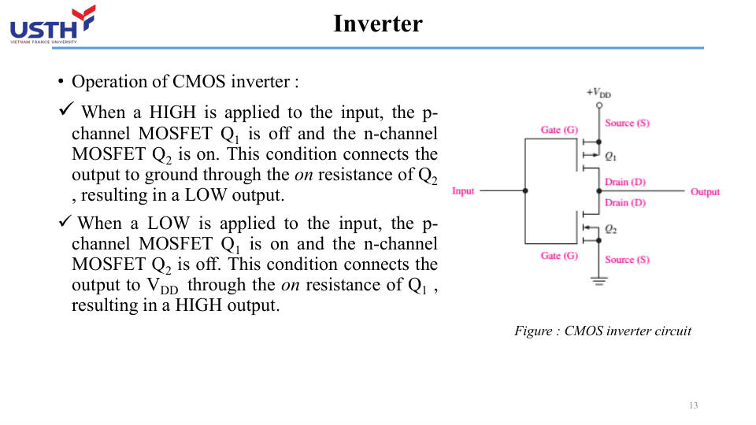
logic·13 · m02 logic·14 · m02
logic·14 · m02 logic·15 · m02
logic·15 · m02 logic·16 · m02
logic·16 · m02 logic·17 · m02
logic·17 · m02 logic·18 · m02
logic·18 · m02 logic·19 · m02
logic·19 · m02 logic·20 · m02
logic·20 · m02 logic·21 · m02
logic·21 · m02 logic·22 · m02
logic·22 · m02 logic·23 · m02
logic·23 · m02 logic·24 · m02
logic·24 · m02 logic·25 · m02
logic·25 · m02 logic·26 · m02
logic·26 · m02 logic·27 · m02
logic·27 · m02 logic·28 · m02
logic·28 · m02 logic·29 · m02
logic·29 · m02 logic·30 · m02
logic·30 · m02 logic·31 · m02
logic·31 · m02 logic·32 · m02
logic·32 · m02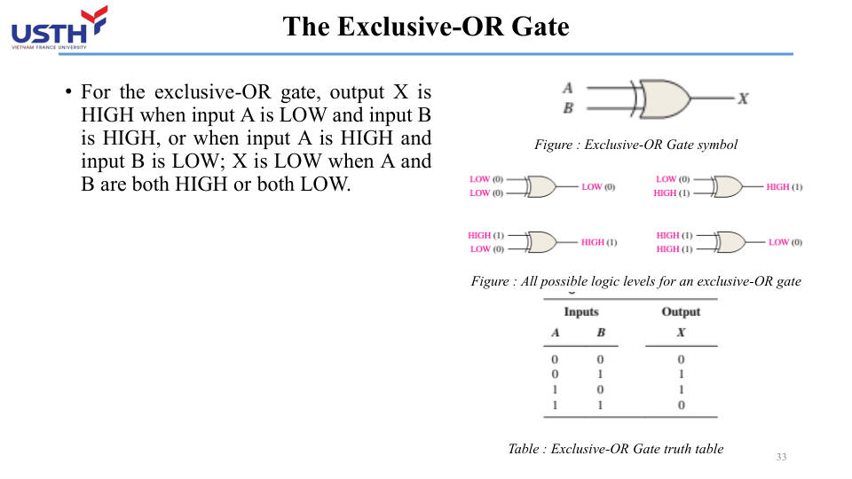
logic·33 · m02 logic·34 · m02
logic·34 · m02 logic·35 · m02
logic·35 · m02 logic·36 · m02
logic·36 · m02 logic·37 · m02
logic·37 · m02 logic·38 · m02
logic·38 · m02 logic·39 · m02
logic·39 · m02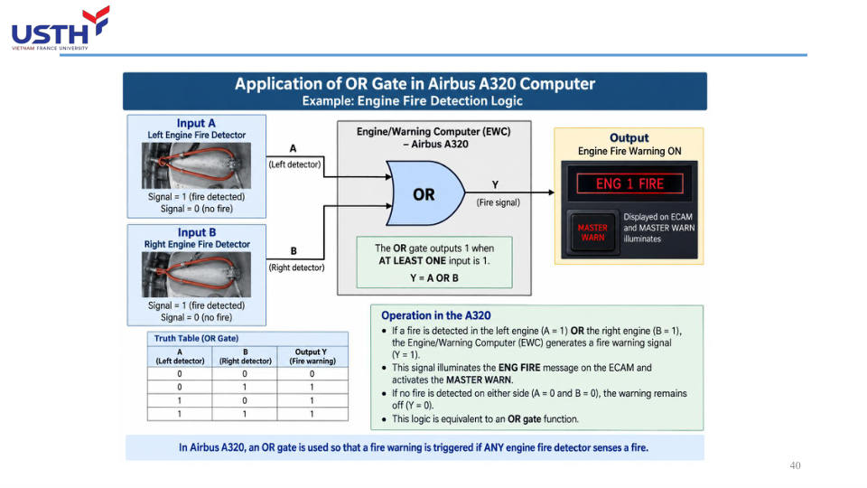
logic·40 · m02 logic·41 · m02
logic·41 · m02 logic·42 · m02
logic·42 · m02 logic·43 · m02
logic·43 · m02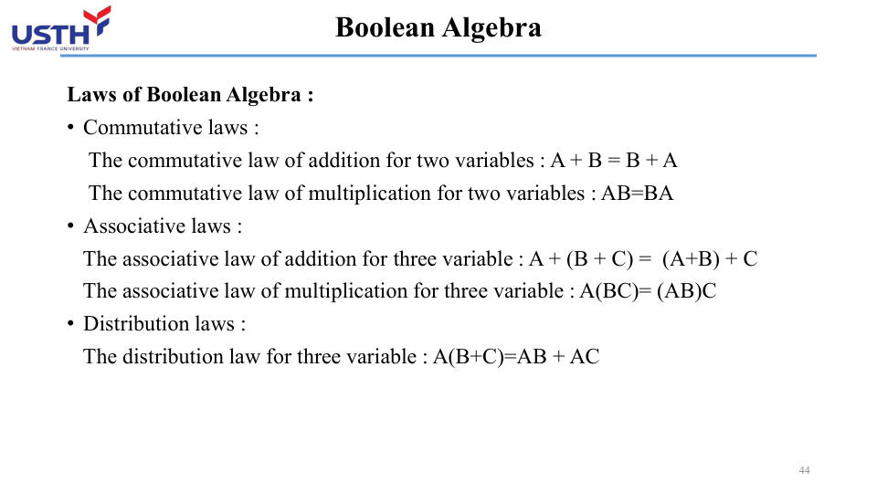
logic·44 · m02 logic·45 · m02
logic·45 · m02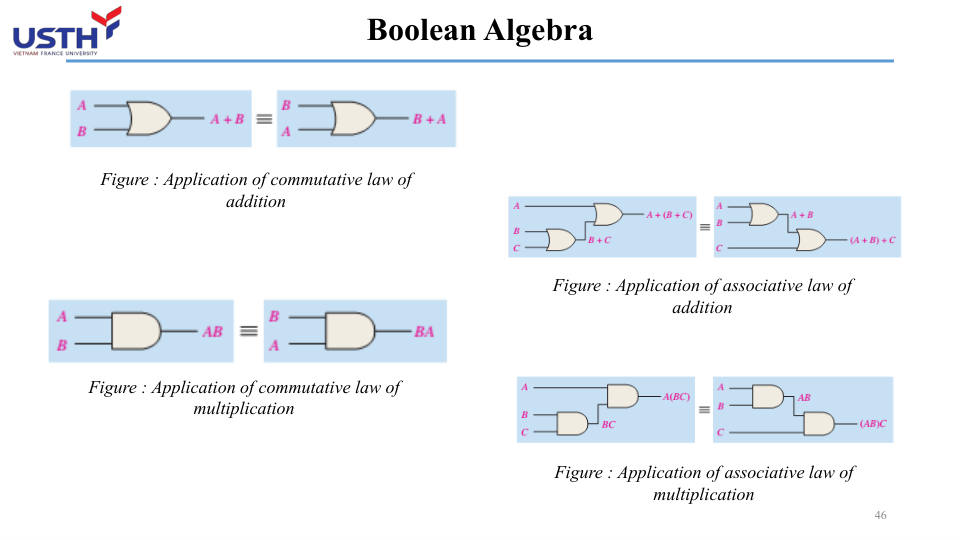
logic·46 · m02 logic·47 · m02
logic·47 · m02 logic·48 · m02
logic·48 · m02 logic·49 · m02
logic·49 · m02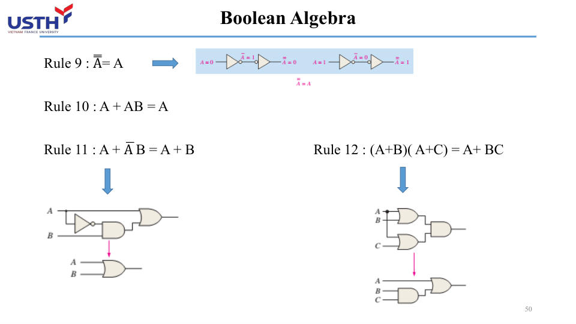
logic·50 · m02 logic·51 · m02
logic·51 · m02 logic·52 · m02
logic·52 · m02 logic·53 · m02
logic·53 · m02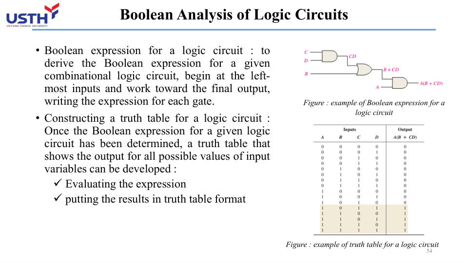
logic·54 · m02 logic·55 · m02
logic·55 · m02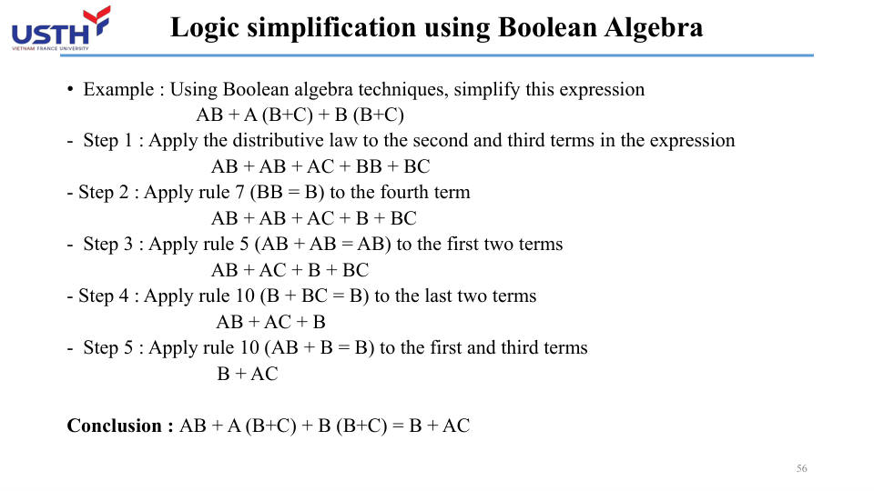
logic·56 · m02 logic·57 · m02
logic·57 · m02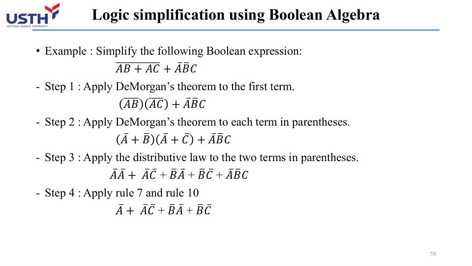
logic·58 · m02 logic·59 · m02
logic·59 · m02 logic·60 · m02
logic·60 · m02Integrated circuit and multiplexing (60) · VI/EN transcript (60/60)
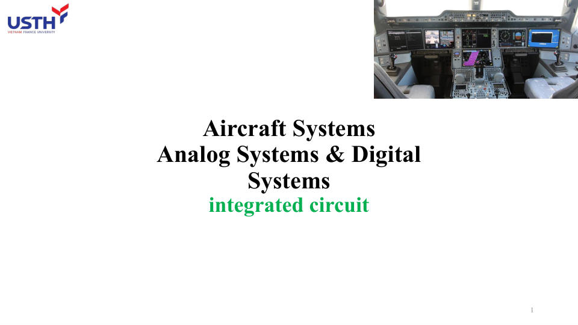
icmux·1 · m03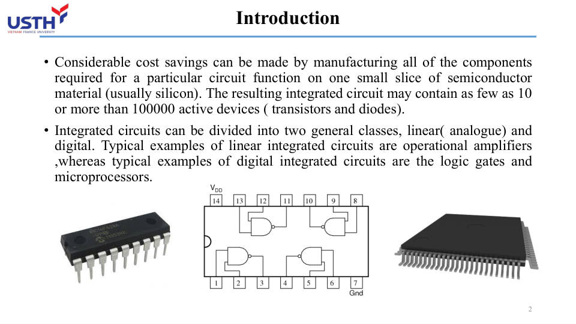
icmux·2 · m03 icmux·3 · m03
icmux·3 · m03 icmux·4 · m03
icmux·4 · m03 icmux·5 · m03
icmux·5 · m03 icmux·6 · m03
icmux·6 · m03 icmux·7 · m03
icmux·7 · m03 icmux·8 · m03
icmux·8 · m03 icmux·9 · m03
icmux·9 · m03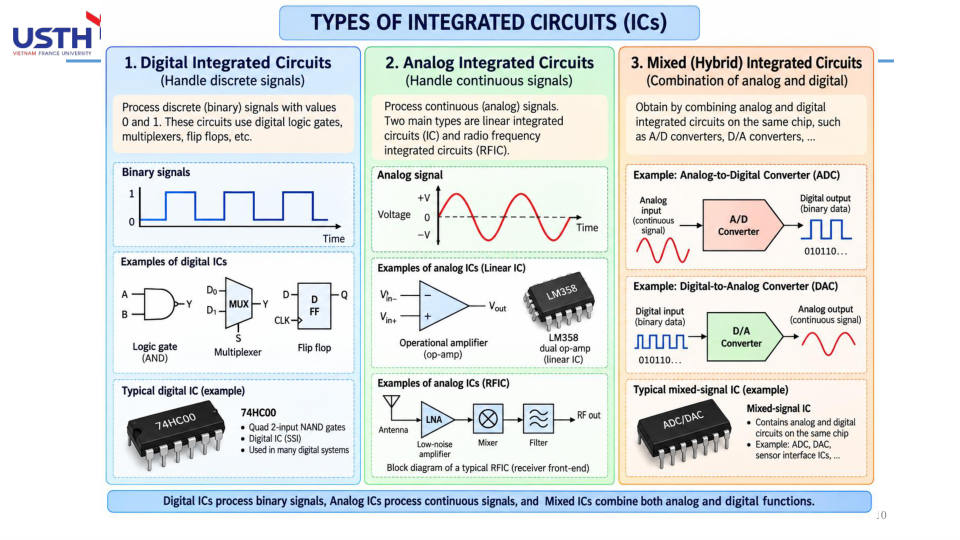
icmux·10 · m03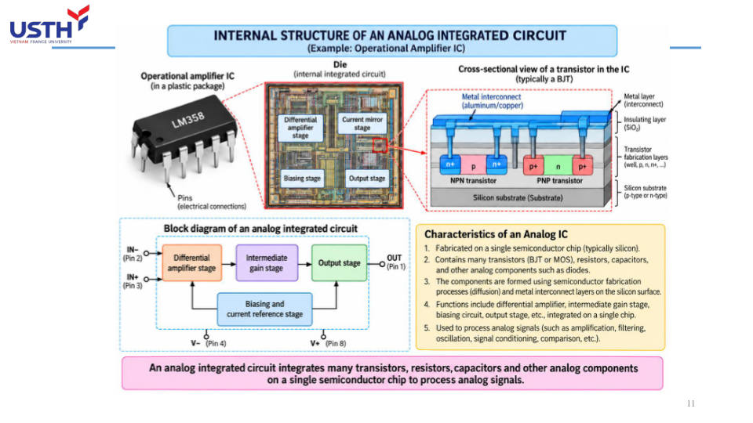
icmux·11 · m03 icmux·12 · m03
icmux·12 · m03 icmux·13 · m03
icmux·13 · m03 icmux·14 · m03
icmux·14 · m03 icmux·15 · m03
icmux·15 · m03 icmux·16 · m03
icmux·16 · m03 icmux·17 · m03
icmux·17 · m03 icmux·18 · m03
icmux·18 · m03 icmux·19 · m03
icmux·19 · m03 icmux·20 · m03
icmux·20 · m03 icmux·21 · m03
icmux·21 · m03 icmux·22 · m03
icmux·22 · m03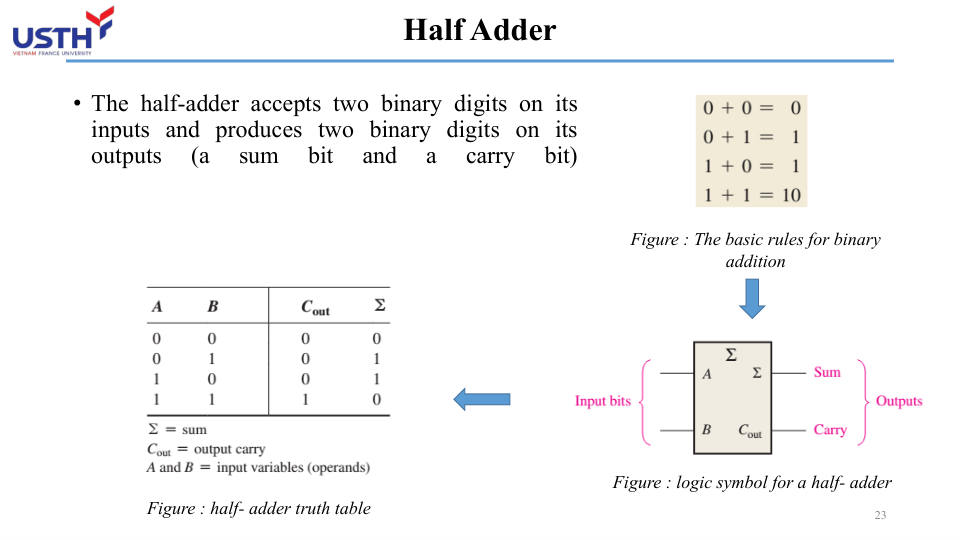
icmux·23 · m03 icmux·24 · m03
icmux·24 · m03 icmux·25 · m03
icmux·25 · m03 icmux·26 · m03
icmux·26 · m03 icmux·27 · m03
icmux·27 · m03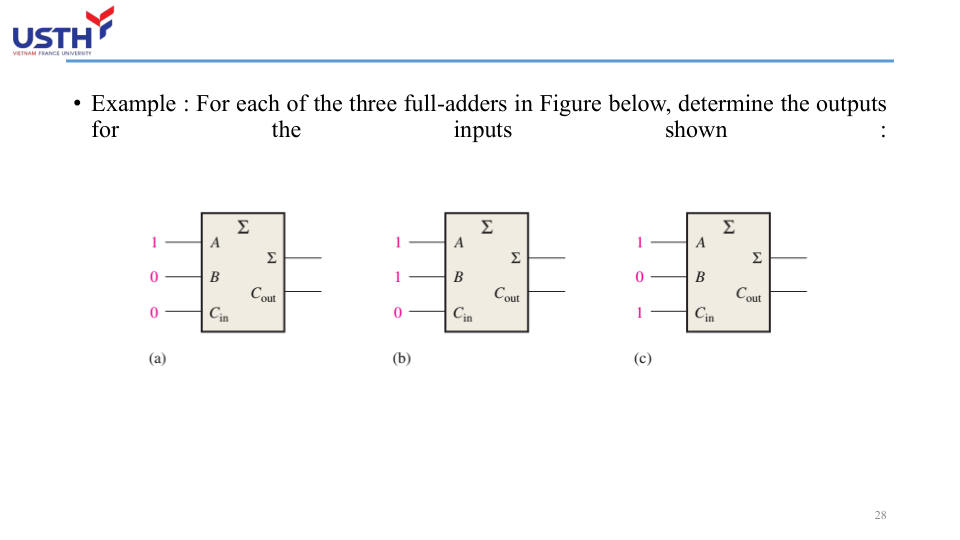
icmux·28 · m03 icmux·29 · m03
icmux·29 · m03 icmux·30 · m03
icmux·30 · m03 icmux·31 · m03
icmux·31 · m03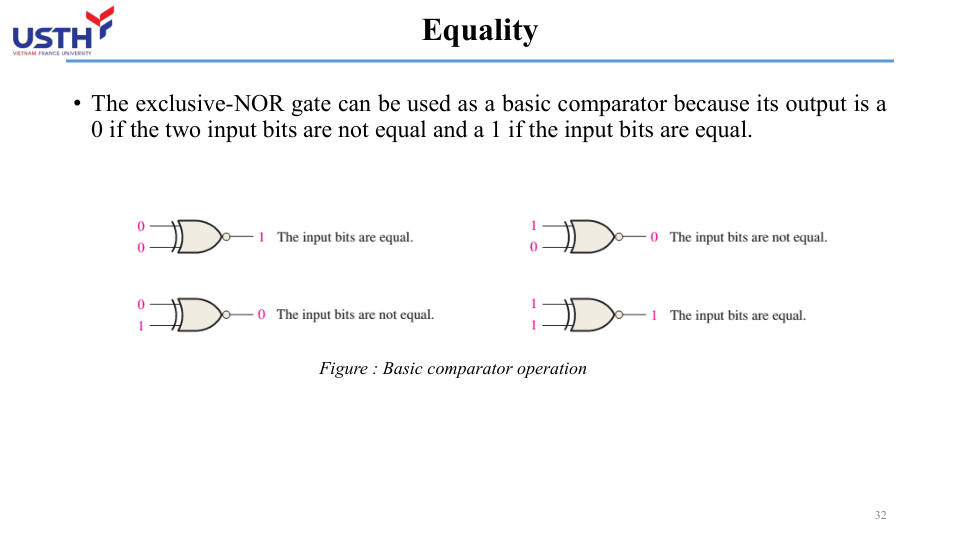
icmux·32 · m03 icmux·33 · m03
icmux·33 · m03 icmux·34 · m03
icmux·34 · m03 icmux·35 · m03
icmux·35 · m03 icmux·36 · m03
icmux·36 · m03 icmux·37 · m03
icmux·37 · m03 icmux·38 · m03
icmux·38 · m03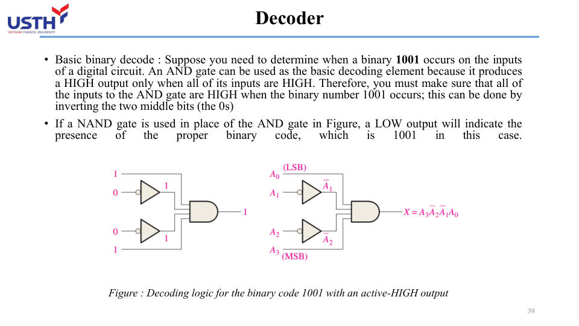
icmux·39 · m03 icmux·40 · m03
icmux·40 · m03 icmux·41 · m03
icmux·41 · m03 icmux·42 · m03
icmux·42 · m03 icmux·43 · m03
icmux·43 · m03 icmux·44 · m03
icmux·44 · m03 icmux·45 · m03
icmux·45 · m03 icmux·46 · m03
icmux·46 · m03 icmux·47 · m03
icmux·47 · m03 icmux·48 · m03
icmux·48 · m03 icmux·49 · m03
icmux·49 · m03 icmux·50 · m03
icmux·50 · m03 icmux·51 · m03
icmux·51 · m03 icmux·52 · m03
icmux·52 · m03 icmux·53 · m03
icmux·53 · m03 icmux·54 · m03
icmux·54 · m03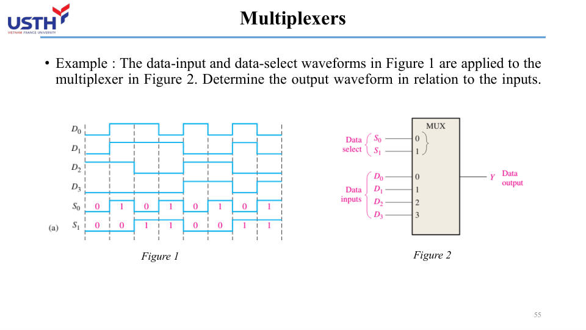
icmux·55 · m03 icmux·56 · m03
icmux·56 · m03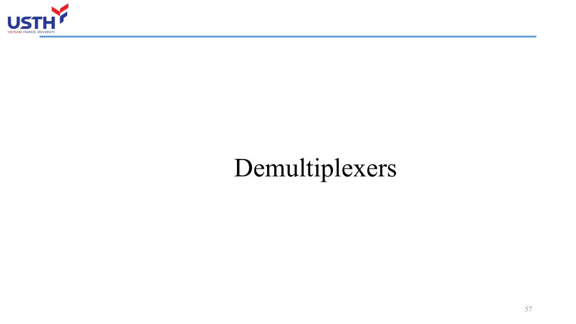
icmux·57 · m03 icmux·58 · m03
icmux·58 · m03 icmux·59 · m03icmux·60 · m03
icmux·59 · m03icmux·60 · m03Basic computer structure and microprocessor (52) · VI/EN transcript (52/52)
 cpu·1 · m04
cpu·1 · m04 cpu·2 · m04
cpu·2 · m04 cpu·3 · m04
cpu·3 · m04 cpu·4 · m04
cpu·4 · m04 cpu·5 · m04
cpu·5 · m04 cpu·6 · m04
cpu·6 · m04 cpu·7 · m04
cpu·7 · m04 cpu·8 · m04
cpu·8 · m04 cpu·9 · m04
cpu·9 · m04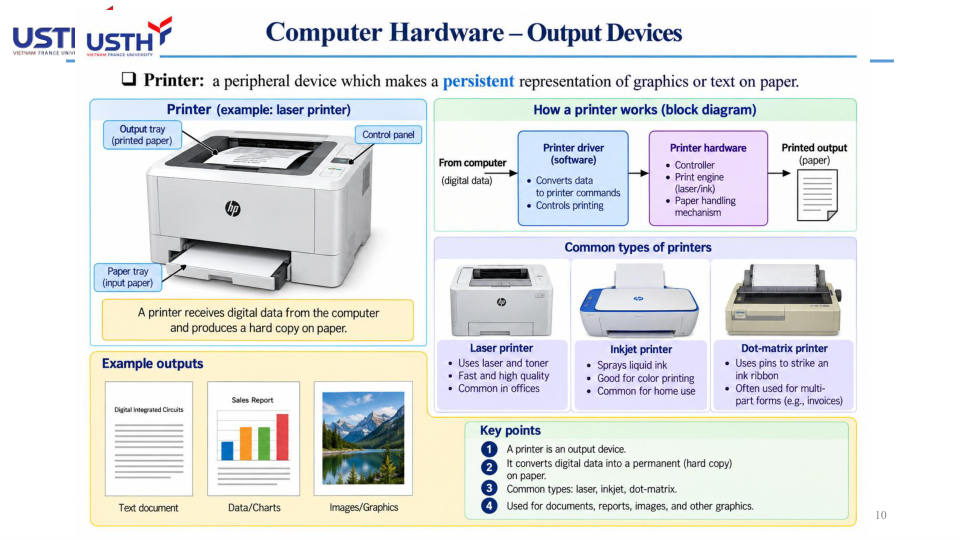
cpu·10 · m04 cpu·11 · m04
cpu·11 · m04 cpu·12 · m04
cpu·12 · m04 cpu·13 · m04
cpu·13 · m04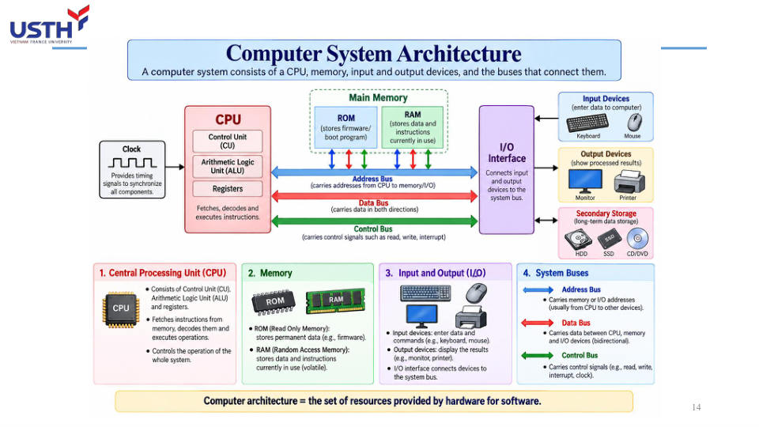
cpu·14 · m04 cpu·15 · m04
cpu·15 · m04 cpu·16 · m04
cpu·16 · m04 cpu·17 · m04
cpu·17 · m04 cpu·18 · m04
cpu·18 · m04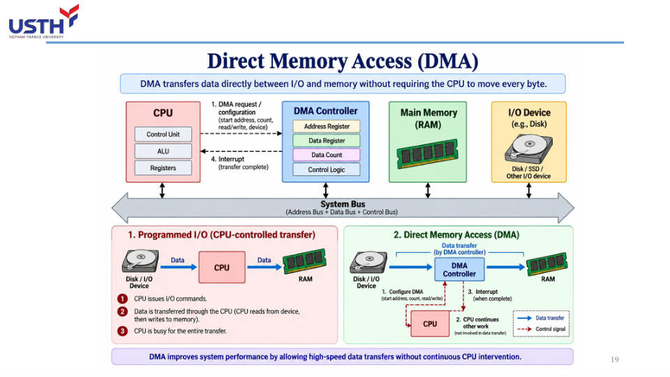
cpu·19 · m04 cpu·20 · m04
cpu·20 · m04 cpu·21 · m04
cpu·21 · m04 cpu·22 · m04
cpu·22 · m04 cpu·23 · m04
cpu·23 · m04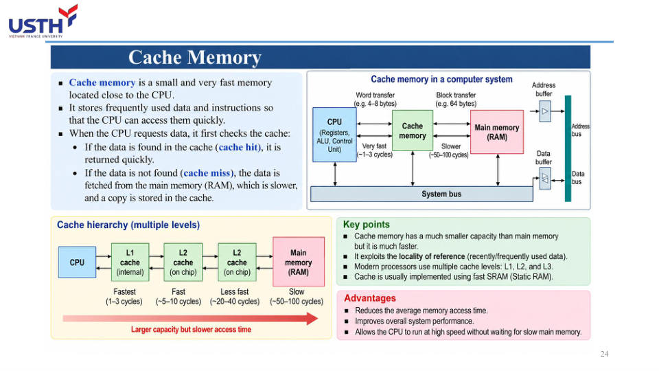
cpu·24 · m04 cpu·25 · m04
cpu·25 · m04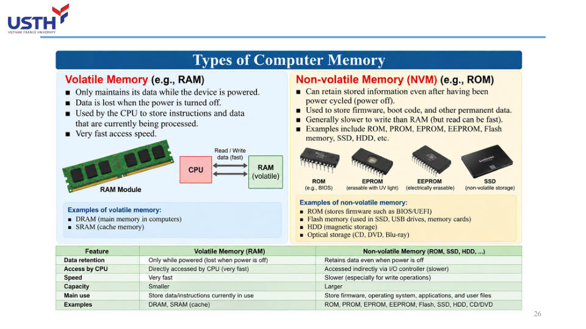
cpu·26 · m04 cpu·27 · m04
cpu·27 · m04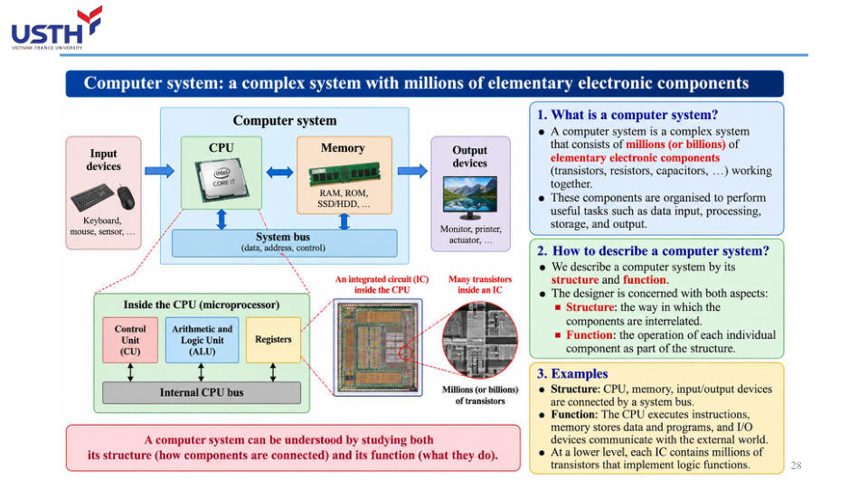
cpu·28 · m04 cpu·29 · m04
cpu·29 · m04 cpu·30 · m04
cpu·30 · m04 cpu·31 · m04
cpu·31 · m04 cpu·32 · m04
cpu·32 · m04 cpu·33 · m04
cpu·33 · m04 cpu·34 · m04
cpu·34 · m04 cpu·35 · m04
cpu·35 · m04 cpu·36 · m04
cpu·36 · m04 cpu·37 · m04
cpu·37 · m04 cpu·38 · m04
cpu·38 · m04 cpu·39 · m04
cpu·39 · m04 cpu·40 · m04
cpu·40 · m04 cpu·41 · m04
cpu·41 · m04 cpu·42 · m04
cpu·42 · m04 cpu·43 · m04
cpu·43 · m04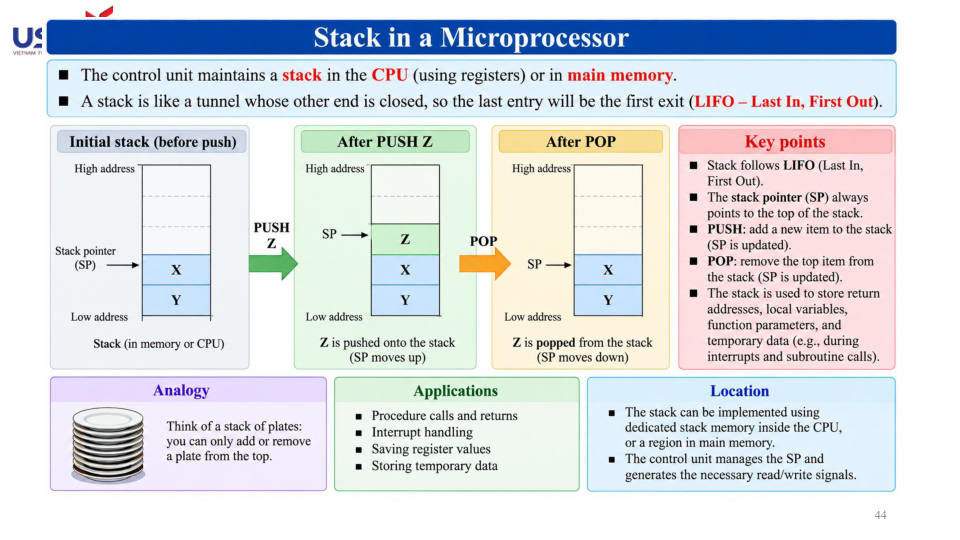
cpu·44 · m04 cpu·45 · m04
cpu·45 · m04 cpu·46 · m04
cpu·46 · m04 cpu·47 · m04
cpu·47 · m04 cpu·48 · m04
cpu·48 · m04 cpu·49 · m04
cpu·49 · m04 cpu·50 · m04
cpu·50 · m04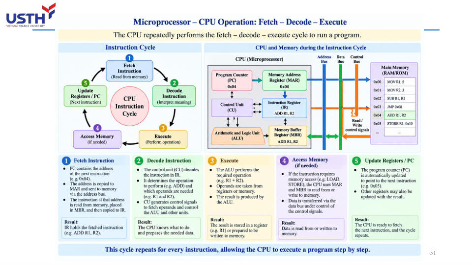
cpu·51 · m04 cpu·52 · m04
cpu·52 · m04Data buses aircraft (18) · VI/EN transcript (18/18)
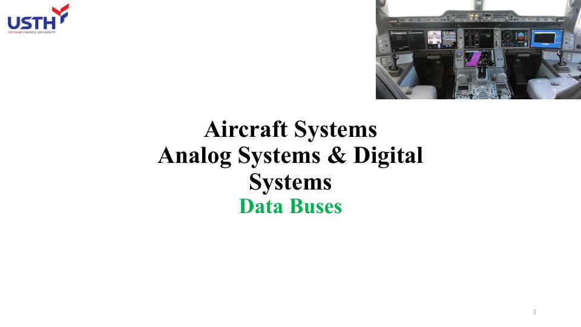
bus·1 · m05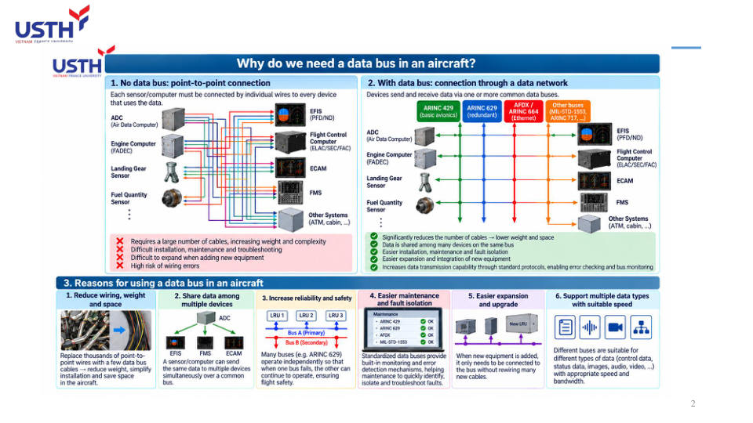
bus·2 · m05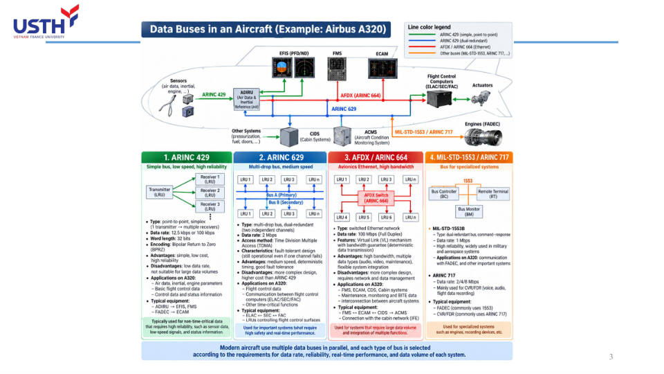
bus·3 · m05 bus·4 · m05
bus·4 · m05 bus·5 · m05
bus·5 · m05 bus·6 · m05
bus·6 · m05 bus·7 · m05
bus·7 · m05 bus·8 · m05
bus·8 · m05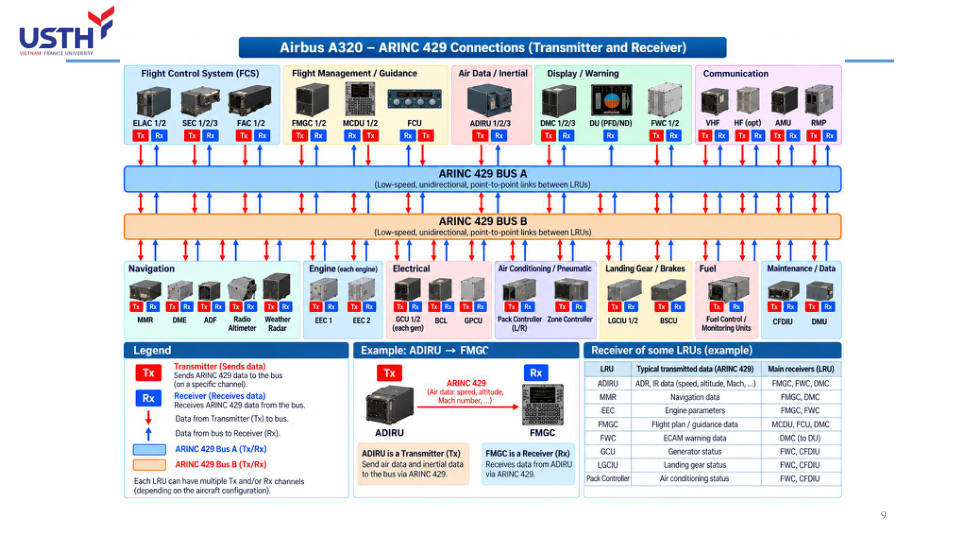
bus·9 · m05 bus·10 · m05
bus·10 · m05 bus·11 · m05
bus·11 · m05 bus·12 · m05
bus·12 · m05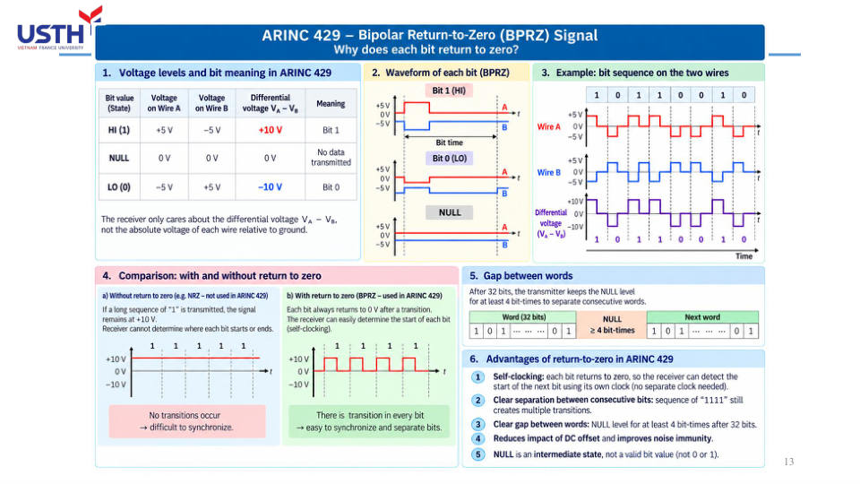
bus·13 · m05 bus·14 · m05
bus·14 · m05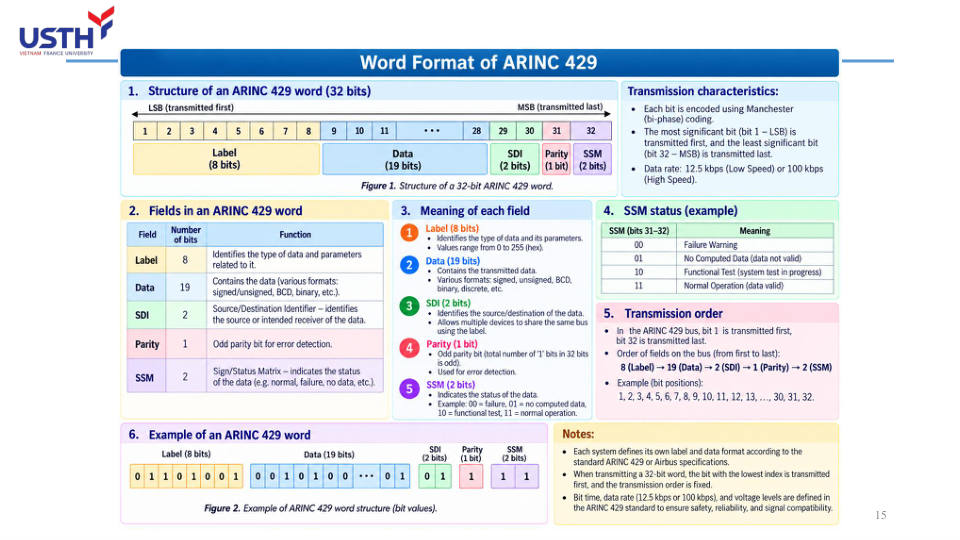
bus·15 · m05 bus·16 · m05
bus·16 · m05 bus·17 · m05
bus·17 · m05 bus·18 · m05
bus·18 · m05Electronic displays (36) · VI/EN transcript (36/36)
 disp·1 · m06
disp·1 · m06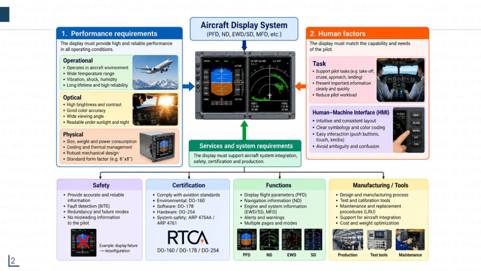
disp·2 · m06 disp·3 · m06
disp·3 · m06 disp·4 · m06
disp·4 · m06 disp·5 · m06
disp·5 · m06 disp·6 · m06
disp·6 · m06 disp·7 · m06
disp·7 · m06 disp·8 · m06
disp·8 · m06 disp·9 · m06
disp·9 · m06 disp·10 · m06
disp·10 · m06 disp·11 · m06
disp·11 · m06 disp·12 · m06
disp·12 · m06 disp·13 · m06
disp·13 · m06 disp·14 · m06
disp·14 · m06 disp·15 · m06
disp·15 · m06 disp·16 · m06
disp·16 · m06 disp·17 · m06
disp·17 · m06 disp·18 · m06
disp·18 · m06 disp·19 · m06
disp·19 · m06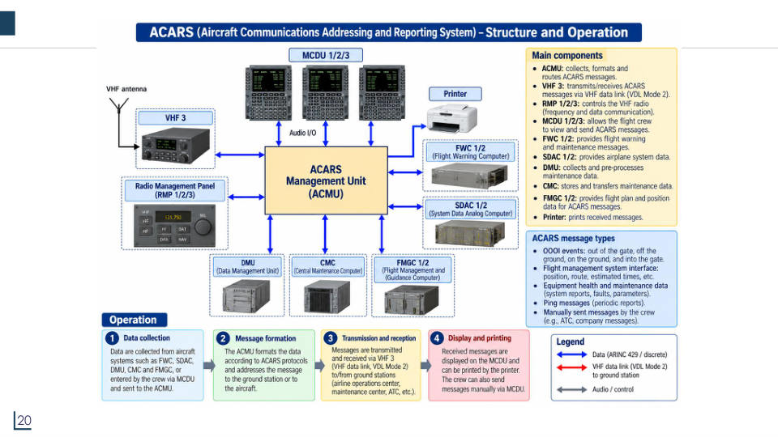
disp·20 · m06 disp·21 · m06
disp·21 · m06 disp·22 · m06
disp·22 · m06 disp·23 · m06
disp·23 · m06 disp·24 · m06
disp·24 · m06 disp·25 · m06
disp·25 · m06 disp·26 · m06
disp·26 · m06 disp·27 · m06
disp·27 · m06 disp·28 · m06
disp·28 · m06 disp·29 · m06
disp·29 · m06 disp·30 · m06
disp·30 · m06 disp·31 · m06
disp·31 · m06 disp·32 · m06
disp·32 · m06 disp·33 · m06
disp·33 · m06 disp·34 · m06
disp·34 · m06 disp·35 · m06
disp·35 · m06 disp·36 · m06
disp·36 · m06Optic fiber (37) · VI/EN transcript (37/37)
 fib·1 · m08
fib·1 · m08 fib·2 · m08
fib·2 · m08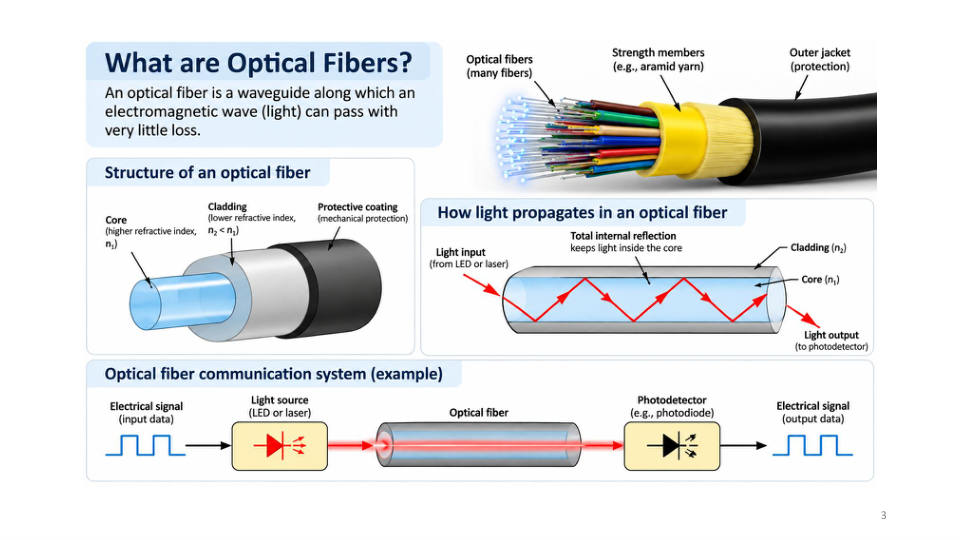
fib·3 · m08 fib·4 · m08
fib·4 · m08 fib·5 · m08
fib·5 · m08 fib·6 · m08
fib·6 · m08 fib·7 · m08
fib·7 · m08 fib·8 · m08
fib·8 · m08 fib·9 · m08
fib·9 · m08 fib·10 · m08
fib·10 · m08 fib·11 · m08
fib·11 · m08 fib·12 · m08
fib·12 · m08 fib·13 · m08
fib·13 · m08 fib·14 · m08
fib·14 · m08 fib·15 · m08
fib·15 · m08 fib·16 · m08
fib·16 · m08 fib·17 · m08
fib·17 · m08 fib·18 · m08
fib·18 · m08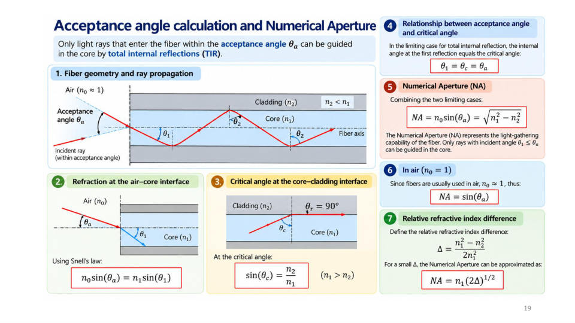
fib·19 · m08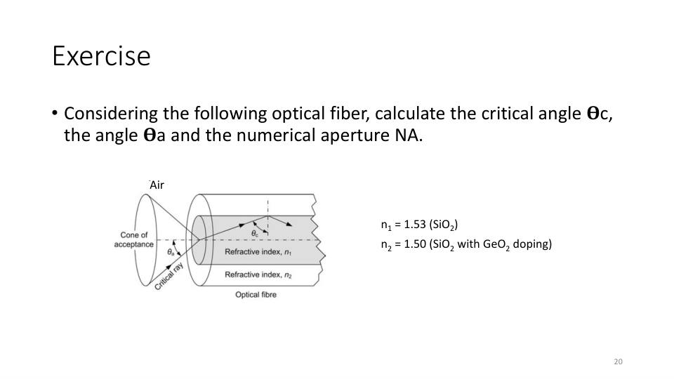
fib·20 · m08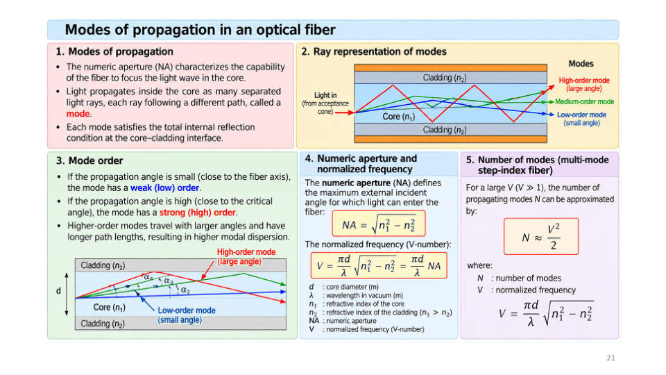
fib·21 · m08 fib·22 · m08
fib·22 · m08 fib·23 · m08
fib·23 · m08 fib·24 · m08
fib·24 · m08 fib·25 · m08
fib·25 · m08 fib·26 · m08
fib·26 · m08 fib·27 · m08
fib·27 · m08 fib·28 · m08
fib·28 · m08 fib·29 · m08
fib·29 · m08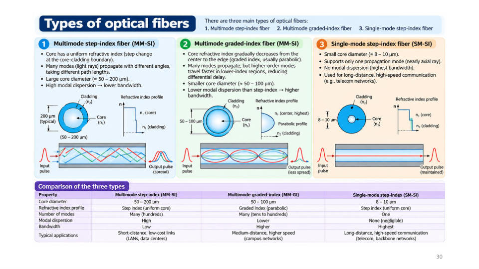
fib·30 · m08 fib·31 · m08
fib·31 · m08 fib·32 · m08
fib·32 · m08 fib·33 · m08
fib·33 · m08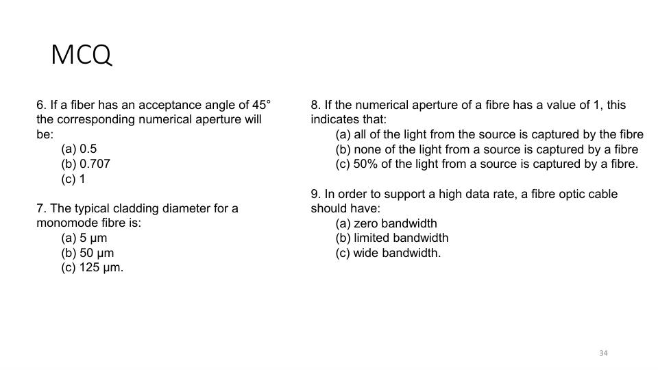
fib·34 · m08 fib·35 · m08
fib·35 · m08 fib·36 · m08
fib·36 · m08 fib·37 · m08
fib·37 · m08EMC and aircraft (46) · VI/EN transcript (46/46)
 emc·1 · m09emc·2 · m09
emc·1 · m09emc·2 · m09 emc·3 · m09
emc·3 · m09 emc·4 · m09
emc·4 · m09 emc·5 · m09
emc·5 · m09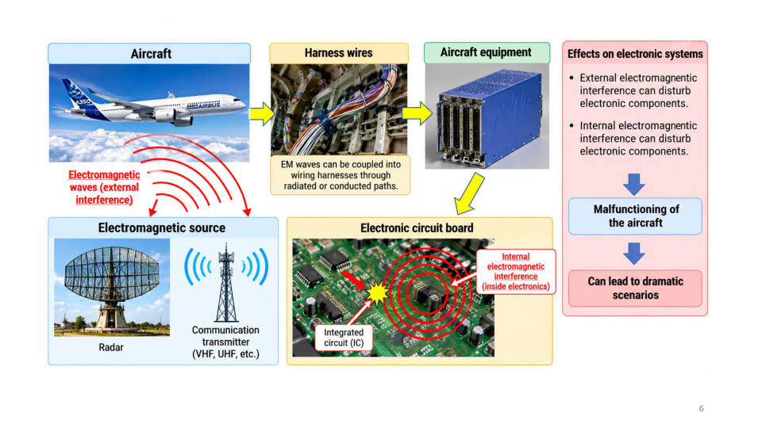
emc·6 · m09 emc·7 · m09
emc·7 · m09 emc·8 · m09
emc·8 · m09 emc·9 · m09
emc·9 · m09 emc·10 · m09
emc·10 · m09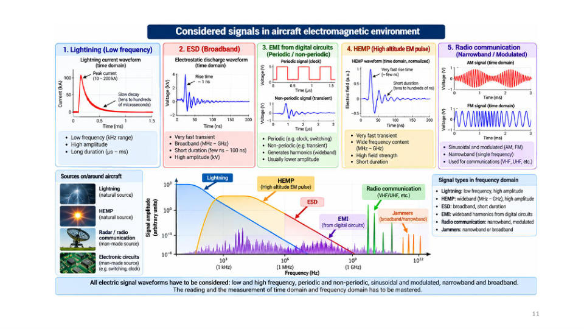
emc·11 · m09 emc·12 · m09
emc·12 · m09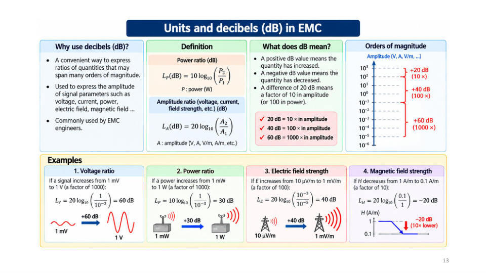
emc·13 · m09 emc·14 · m09
emc·14 · m09 emc·15 · m09
emc·15 · m09 emc·16 · m09
emc·16 · m09 emc·17 · m09
emc·17 · m09 emc·18 · m09
emc·18 · m09 emc·19 · m09
emc·19 · m09 emc·20 · m09
emc·20 · m09 emc·21 · m09
emc·21 · m09 emc·22 · m09
emc·22 · m09 emc·23 · m09
emc·23 · m09 emc·24 · m09
emc·24 · m09 emc·25 · m09
emc·25 · m09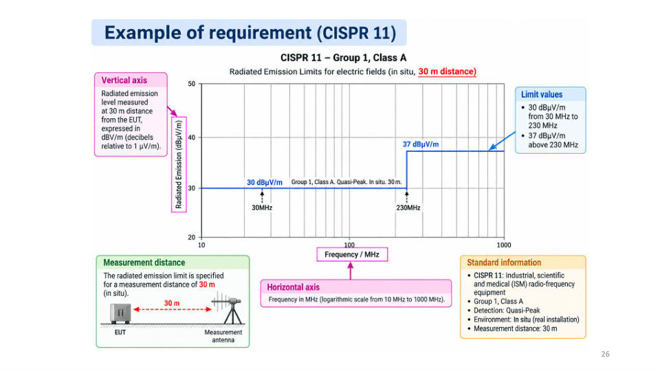
emc·26 · m09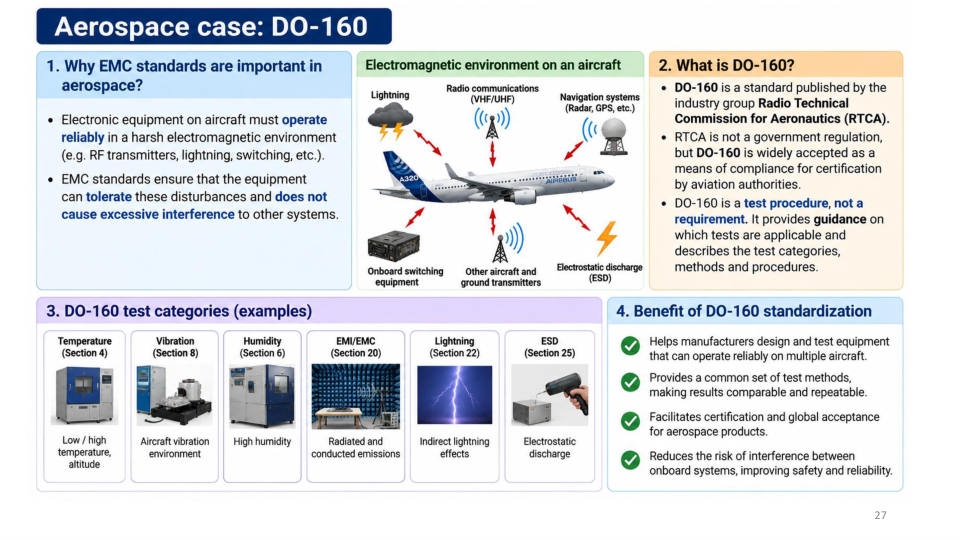
emc·27 · m09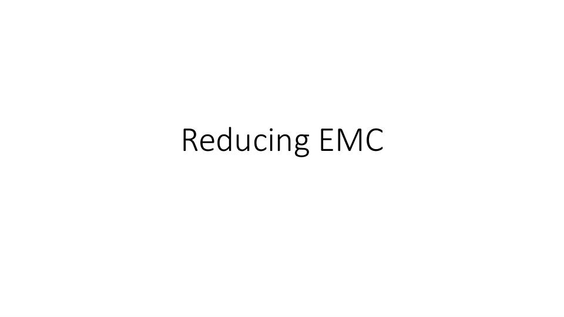
emc·28 · m09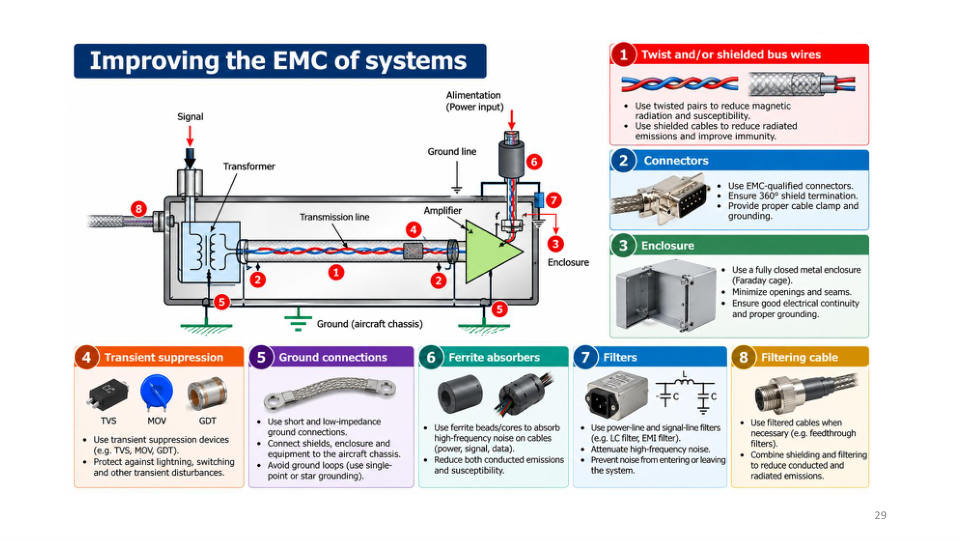
emc·29 · m09 emc·30 · m09
emc·30 · m09 emc·31 · m09
emc·31 · m09 emc·32 · m09emc·33 · m09
emc·32 · m09emc·33 · m09 emc·34 · m09
emc·34 · m09 emc·35 · m09
emc·35 · m09 emc·36 · m09
emc·36 · m09 emc·37 · m09
emc·37 · m09 emc·38 · m09emc·39 · m09
emc·38 · m09emc·39 · m09 emc·40 · m09
emc·40 · m09 emc·41 · m09emc·42 · m09
emc·41 · m09emc·42 · m09 emc·43 · m09
emc·43 · m09 emc·44 · m09
emc·44 · m09 emc·45 · m09
emc·45 · m09 emc·46 · m09
emc·46 · m09